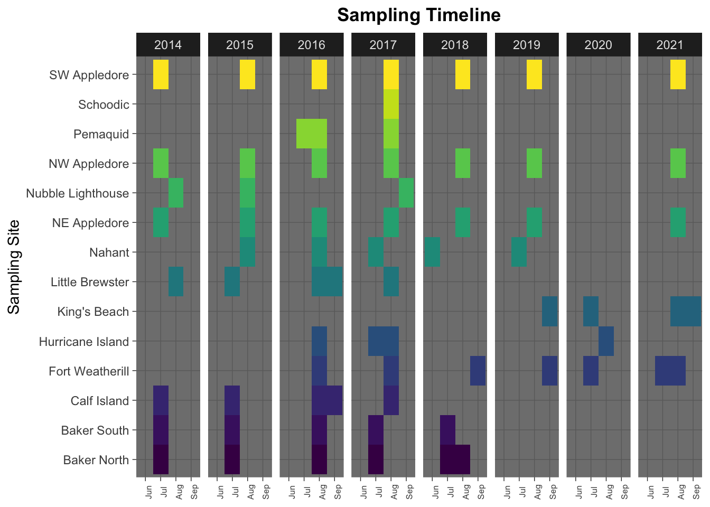
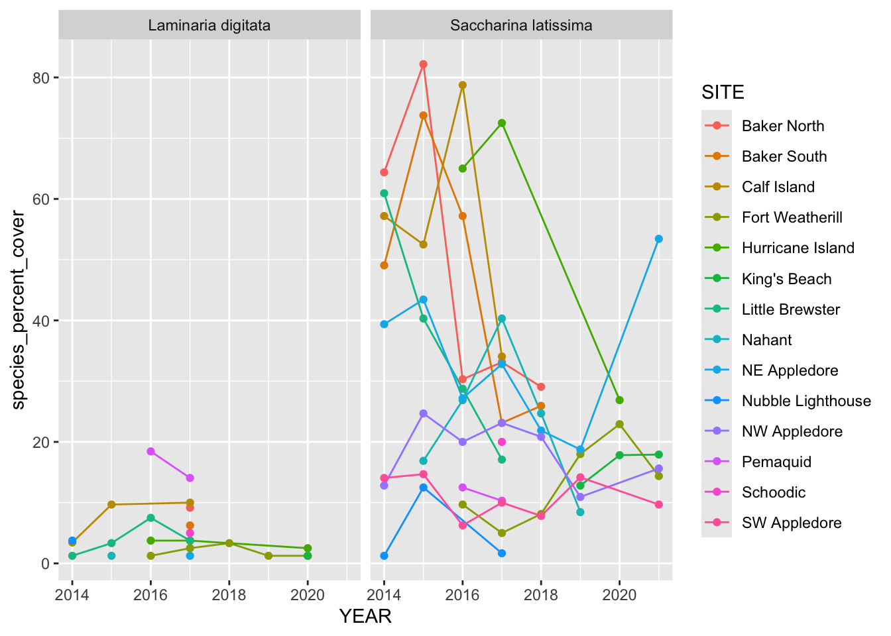
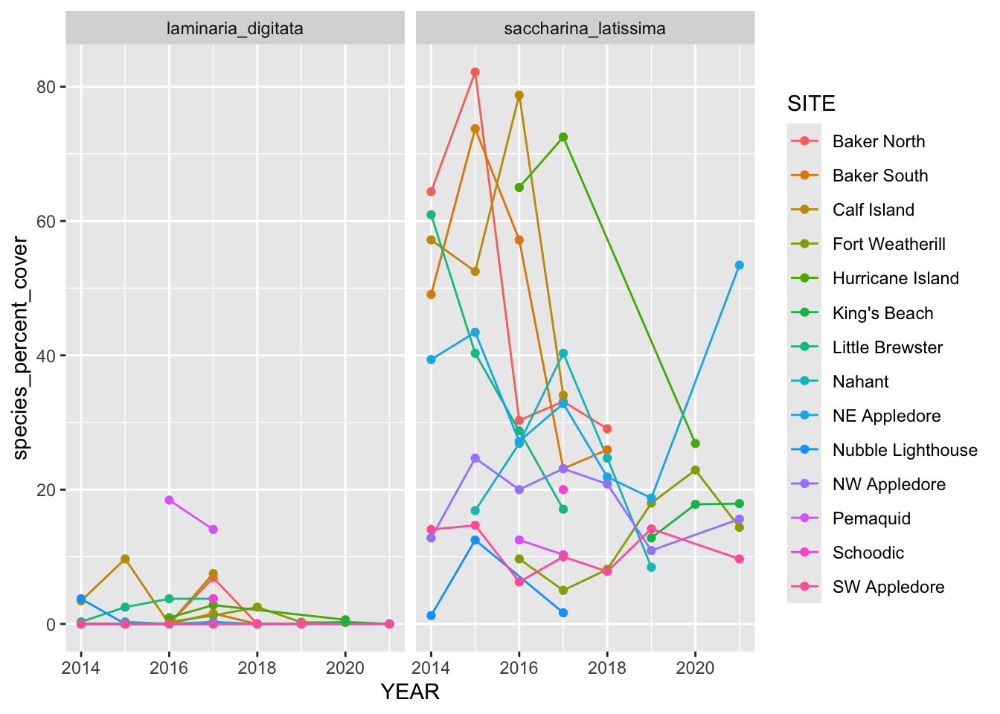

Packages used for the homework are loaded here, in order of use
library(readr)library(dplyr)
Attaching package: 'dplyr'
The following objects are masked from 'package:stats':
filter, lag
The following objects are masked from 'package:base':
intersect, setdiff, setequal, union
library(ggplot2)library(tidyr)
1. Load me
Use the readr library (and URL) to load in the data. Show me that you can do it both without downloading it and if you download it.
# Load the data in without downloading itkelp_data <-read_csv("https://github.com/kelpecosystems/observational_data/blob/master/cleaned_data/keen_cover.csv?raw=true")
Rows: 6222 Columns: 21
── Column specification ────────────────────────────────────────────────────────
Delimiter: ","
chr (17): NETWORK, PI, SITE, TRANSECT, SP_CODE, GROUP, DIVISION.FAMILY, COMM...
dbl (4): YEAR, MONTH, DAY, PERCENT_COVER
ℹ Use `spec()` to retrieve the full column specification for this data.
ℹ Specify the column types or set `show_col_types = FALSE` to quiet this message.
# Load he data in with downloading itsetwd(here::here()) # set working directory to current project folder# getwd()download.file("https://github.com/kelpecosystems/observational_data/blob/master/cleaned_data/keen_cover.csv?raw=true", "data/kelp_data")kelp_data <-read_csv("data/kelp_data")
Rows: 6222 Columns: 21
── Column specification ────────────────────────────────────────────────────────
Delimiter: ","
chr (17): NETWORK, PI, SITE, TRANSECT, SP_CODE, GROUP, DIVISION.FAMILY, COMM...
dbl (4): YEAR, MONTH, DAY, PERCENT_COVER
ℹ Use `spec()` to retrieve the full column specification for this data.
ℹ Specify the column types or set `show_col_types = FALSE` to quiet this message.
2. Format
Take a look at the data in any way you see fit to be able to tell me if the data is in a wide or long format. Justify your answer.
str(kelp_data)
spc_tbl_ [6,222 × 21] (S3: spec_tbl_df/tbl_df/tbl/data.frame)
$ NETWORK : chr [1:6222] "KEEN ONE" "KEEN ONE" "KEEN ONE" "KEEN ONE" ...
$ PI : chr [1:6222] "Byrnes" "Byrnes" "Byrnes" "Byrnes" ...
$ YEAR : num [1:6222] 2014 2014 2014 2014 2014 ...
$ MONTH : num [1:6222] 7 7 7 7 7 7 7 7 7 7 ...
$ DAY : num [1:6222] 8 8 8 8 8 8 8 8 8 8 ...
$ SITE : chr [1:6222] "Baker North" "Baker North" "Baker North" "Baker North" ...
$ TRANSECT : chr [1:6222] "1" "1" "1" "1" ...
$ SP_CODE : chr [1:6222] "ANSP" "B" "BA" "BL" ...
$ PERCENT_COVER : num [1:6222] 2.5 7.5 2.5 10 21.2 ...
$ GROUP : chr [1:6222] "Invertebrate" "Substrate" "Invertebrate" "Substrate" ...
$ DIVISION.FAMILY : chr [1:6222] "Molluscs" NA "Arthropods" NA ...
$ COMMON.DIVISION.NAME: chr [1:6222] "Bivalves" NA "Crustaceans" NA ...
$ SIZE : chr [1:6222] NA NA NA NA ...
$ COMMON.NAME : chr [1:6222] "jingle shell" NA NA NA ...
$ KINGDOM : chr [1:6222] "Animalia" NA NA NA ...
$ PHYLUM : chr [1:6222] "Mollusca" NA NA NA ...
$ CLASS : chr [1:6222] "Bivalvia" NA NA NA ...
$ ORDER : chr [1:6222] "Pectinida" NA NA NA ...
$ FAMILY : chr [1:6222] "Anomiidae" NA NA NA ...
$ GENUS : chr [1:6222] "Anomia" NA NA NA ...
$ SPECIES : chr [1:6222] "Anomia" NA "Barnacle" NA ...
- attr(*, "spec")=
.. cols(
.. NETWORK = col_character(),
.. PI = col_character(),
.. YEAR = col_double(),
.. MONTH = col_double(),
.. DAY = col_double(),
.. SITE = col_character(),
.. TRANSECT = col_character(),
.. SP_CODE = col_character(),
.. PERCENT_COVER = col_double(),
.. GROUP = col_character(),
.. DIVISION.FAMILY = col_character(),
.. COMMON.DIVISION.NAME = col_character(),
.. SIZE = col_character(),
.. COMMON.NAME = col_character(),
.. KINGDOM = col_character(),
.. PHYLUM = col_character(),
.. CLASS = col_character(),
.. ORDER = col_character(),
.. FAMILY = col_character(),
.. GENUS = col_character(),
.. SPECIES = col_character()
.. )
- attr(*, "problems")=<externalptr>
head(kelp_data, n =20)
# A tibble: 20 × 21
NETWORK PI YEAR MONTH DAY SITE TRANSECT SP_CODE PERCENT_COVER GROUP
<chr> <chr> <dbl> <dbl> <dbl> <chr> <chr> <chr> <dbl> <chr>
1 KEEN ONE Byrnes 2014 7 8 Baker… 1 ANSP 2.5 Inve…
2 KEEN ONE Byrnes 2014 7 8 Baker… 1 B 7.5 Subs…
3 KEEN ONE Byrnes 2014 7 8 Baker… 1 BA 2.5 Inve…
4 KEEN ONE Byrnes 2014 7 8 Baker… 1 BL 10 Subs…
5 KEEN ONE Byrnes 2014 7 8 Baker… 1 BM 21.2 Subs…
6 KEEN ONE Byrnes 2014 7 8 Baker… 1 BOSC 1.25 Inve…
7 KEEN ONE Byrnes 2014 7 8 Baker… 1 BOVI 1.25 Inve…
8 KEEN ONE Byrnes 2014 7 8 Baker… 1 BS 18.8 Subs…
9 KEEN ONE Byrnes 2014 7 8 Baker… 1 C 21.2 Subs…
10 KEEN ONE Byrnes 2014 7 8 Baker… 1 CF 7.5 Inve…
11 KEEN ONE Byrnes 2014 7 8 Baker… 1 CHCR 8.75 Algae
12 KEEN ONE Byrnes 2014 7 8 Baker… 1 CLSP 2.5 Inve…
13 KEEN ONE Byrnes 2014 7 8 Baker… 1 CO 1.25 Algae
14 KEEN ONE Byrnes 2014 7 8 Baker… 1 DEAC 3.75 Algae
15 KEEN ONE Byrnes 2014 7 8 Baker… 1 DEVI 12.5 Algae
16 KEEN ONE Byrnes 2014 7 8 Baker… 1 DIAT 5 Algae
17 KEEN ONE Byrnes 2014 7 8 Baker… 1 DIVE 2.5 Inve…
18 KEEN ONE Byrnes 2014 7 8 Baker… 1 EC 23.8 Algae
19 KEEN ONE Byrnes 2014 7 8 Baker… 1 HIRU 2.5 Algae
20 KEEN ONE Byrnes 2014 7 8 Baker… 1 HJ 1.25 Algae
# ℹ 11 more variables: DIVISION.FAMILY <chr>, COMMON.DIVISION.NAME <chr>,
# SIZE <chr>, COMMON.NAME <chr>, KINGDOM <chr>, PHYLUM <chr>, CLASS <chr>,
# ORDER <chr>, FAMILY <chr>, GENUS <chr>, SPECIES <chr>
# View(kelp_data)
The data is in long format. The data frame is organized in which multiple rows are the same transect on the same day, with each row containing information on the details of various species. If the data were in wide format, there would only be one line for each transect on each day, and there would be separate columns for the percent cover of each species.
3. Check it out.
Let’s learn a bit about who is doing what using group_by(), summarize(), and n_distinct().
3a. How many sites has each PI done?
kelp_data |># group data frame by the PIgroup_by(PI) |># get the total number of distinct sites per PIsummarize(unique_sites =n_distinct(SITE, na.rm =TRUE))
Based on the output above, the total number of sites examined by each PI is summarized in Table 1:
Table 1: Number of unique sites per PI
PI
Unique Sites
Byrnes
7
Dijkstra
1
Grabowski
1
Humphries
2
Hurricane
2
Pemaquid
1
3b. How many years of data does each site have? Show it in descending order.
kelp_data |># group data frame by sitegroup_by(SITE) |># get the total number of distinct years per sitesummarize(years_of_data =n_distinct(YEAR, na.rm =TRUE)) |># arrange the data in descending orderarrange(desc(years_of_data))
# A tibble: 14 × 2
SITE years_of_data
<chr> <int>
1 NE Appledore 7
2 NW Appledore 7
3 SW Appledore 7
4 Fort Weatherill 6
5 Baker North 5
6 Baker South 5
7 Nahant 5
8 Calf Island 4
9 Little Brewster 4
10 Hurricane Island 3
11 King's Beach 3
12 Nubble Lighthouse 3
13 Pemaquid 2
14 Schoodic 1
Based on the output above, the total number of years of data at each site is summarized in Table 2:
Table 2: Years of data by site
Site
Years of Data
NE Appledore
7
NW Appledore
7
SW Appledore
7
Fort Weatherill
6
Baker North
5
Baker South
5
Nahant
5
Calf Island
4
Little Brewster
4
Hurricane Island
3
King’s Beach
3
Nubble Lighthouse
3
Pemaquid
2
Schoodic
1
3c. Impress yourself - can you make a figure showing which site was sampled when? There are a lot of ways to do this. Sometimes I use slice(), but I’m sure there are more elegant solutions. For data viz, you can use geoms you’ve used before, or new ones, like geom_tile() or whatever you think would be interesting!
# create plot of kelp_data, month on x axis, site name on y axis and as fill colorggplot(kelp_data,mapping =aes(x =as.factor(MONTH),y = SITE,fill = SITE)) +geom_tile() +facet_grid(~YEAR) +# facet by year in grid to represent timelinetheme_dark() +scale_fill_viridis_d() +# convert numeric month names to abbreviated month namesscale_x_discrete(labels =c("6"="Jun", "7"="Jul", "8"="Aug", "9"="Sep")) +# format title and axes, remove legendtheme(plot.title =element_text(hjust =0.5, face ="bold"),axis.text.x =element_text(angle =90, hjust =0.5, size =6),legend.position ="none") +labs(title ="Sampling Timeline", x =NULL, y ="Sampling Site", fill ="Sampling Site")

4. Let’s look at some kelp!
4a. This is a big unwieldy dataset.
Let’s trim it down to the columns, YEAR, SITE, TRANSECT, PERCENT_COVER, and FAMILY, and SPECIES.
For each species is there only one measurement per species [per] transect each year? Or do we need to worry…… Note, this is a common data check you should be doing if you have a large complex data set!
# group kelp_data df by year, site, transect, species# to isolate species at each transect in a single yearkelp_data_lam |>group_by(YEAR, SITE, TRANSECT, SPECIES) |># summarize data, showing the count for each species at each transect in each yearsummarize(count =n()) |># remove NA species names if present, and filter to only show any rows# with more than 1 of the same species observation.filter(!is.na(SPECIES), count !=1) |>ungroup()
`summarise()` has grouped output by 'YEAR', 'SITE', 'TRANSECT'. You can
override using the `.groups` argument.
# A tibble: 55 × 5
YEAR SITE TRANSECT SPECIES count
<dbl> <chr> <chr> <chr> <int>
1 2014 Baker North 3 Saccharina latissima 2
2 2014 Baker South 1 Saccharina latissima 2
3 2014 Baker South 2 Saccharina latissima 2
4 2014 Baker South 3 Saccharina latissima 2
5 2014 Baker South 4 Saccharina latissima 2
6 2014 Calf Island 1 Saccharina latissima 2
7 2014 Calf Island 2 Saccharina latissima 2
8 2014 Calf Island 4 Saccharina latissima 2
9 2014 Little Brewster 2 Saccharina latissima 2
10 2014 Little Brewster 3 Saccharina latissima 2
# ℹ 45 more rows
There is not always only one measurement per species per transect each year. If there were only one, then the filter count != 1 would have generated an empty summary table.
4d. HAHA that was a trick.
I knew there sometimes was more than one. That’s because some of these are measurements of juveniles and some are adults. OK - sum up the cover for each species on each transect so that we only have one measurement per species (adults and juveniles together!)
`summarise()` has grouped output by 'YEAR', 'SITE', 'TRANSECT'. You can
override using the `.groups` argument.
4e. Neat!
Make a plot showing the timeseries of kelps at each site. You’ll want stat_summary() here. You might even need it twice because - note - stat_summary() has a geom argument where you can do things like “line”. What might that do? Check it out! Facet this plot by species, so we can see the trajectory of each. Feel free to gussy this plot up however you would like (or not).
# create a plot with year on the x axis, species_percent_cover on the y axis# color lines by siteggplot(data = kelp_data_lam,mapping =aes(x = YEAR,y = species_percent_cover,color = SITE)) +# plot a line of the annual mean of species_percent_cover by sitestat_summary(fun = mean, geom ="line") +stat_summary(fun = mean, geom ="point") +facet_grid(~SPECIES)

Do you notice anything? Comment!
It appears Saccharina latissima covers a lot more area at these sites than Laminaria digitata, and in fact Laminaria digitata is not present at a lot of sites. It also appears that the percent cover of Saccharina latissima has generally been declining at most sites, except perhaps at NE Appledore.
5. Wide relationships
Let’s look at the relationship between two of the species here. Lexi made me do this, I swear. She made me think about tradeoffs in our weekly meeting last week, so now you all have this problem.
5a. If we want to look at the relationships between species, we need a wide data set. Use pivot_wider() to make species into columns with percent cover as your values. Note - be careful to fill in NAs as 0s.
# use pivot_wider() to make species into columns, with percent cover as valuekelp_data_lam_wide <-pivot_wider(kelp_data_lam,names_from = SPECIES,values_from = species_percent_cover,values_fill =0) # make NAs into 0# rename species columns so they do not have a spacekelp_data_lam_wide <- kelp_data_lam_wide |>rename(saccharina_latissima =`Saccharina latissima`,laminaria_digitata =`Laminaria digitata`)
5b. Neat! Is there a relationship between Saccharina latissima and Laminaria digitata? Plot it. As a preview for 2 weeks from now, add a line to your ggplot stat_smooth(method = “lm”). Also, remember that you will need backticks ` around variables with spaces in them. What do you think? Feel free to use any other geoms or explore however you like here.
There does not appear to be a clear relationship between the percent cover of Saccharina latissima and Laminaria_digitata, based on this plot.
5c. Hey, so, remember how we filled in a lot of 0s? Yeah, those weren’t in the original long data we plotted….. which means many of those lines from question 4e might be wrong! So let’s pivot this correct long data back wide and then remake the figure from 4e. Does it look different? Does it tell a different story?
# pivot kelp_data_lam_wide back to kelp_data_lam_long with pivot_longer()kelp_data_lam_long <-pivot_longer(kelp_data_lam_wide,cols =c(saccharina_latissima, laminaria_digitata),names_to ="SPECIES", values_to ="species_percent_cover")# create a plot with year on the x axis, species_percent_cover on the y axis# color lines by siteggplot(data = kelp_data_lam_long,mapping =aes(x = YEAR,y = species_percent_cover,color = SITE)) +# plot a line of the annual mean of species_percent_cover by sitestat_summary(fun = mean, geom ="line") +stat_summary(fun = mean, geom ="point") +facet_grid(~SPECIES)

The figure doesn’t look much different than it did before, except that there are more plotted 0% cover values for some of the Laminaria digitata. It does tell a bit of a different story, because it confirms that in some years the percent cover of Laminaria digitata was 0, as opposed to not measured. Since there are still many points where there is no value plotted for certain sites during certain years of each species, it makes me want to look back at the original data set to see if the percent cover was not recorded or if it was zero.
Meta Questions
Meta 1.
So, this was your first time playing with a novel only mostly clean data set found in the wild. How did you feel working with it? What did you notice as you examined it for the very first time knowing nothing about it?
I felt okay working with it and adjusting its structure, although I still feel like I have a lot to learn about why I would want to organize a data set a certain way and how that might help me more easily analyze or visualize specific things.
I noticed it was large, and I had uncertainties about what was in it that I couldn’t really answer without any metadata. For example, why were there different SP_CODE values for “substrate”?
Meta 2.
Split-Apply-Combine is…. a way of life, really. Is this something you have dealt with previously in your life or work? How comfortable are you with this concept?
I am not familiar with that as a phrase per se. I would say I am not yet comfortable with it, although I understand it in concept. I haven’t spent a lot of time working with big data sets that needed real processing.
Meta 3.
When you’ve made datasets in the past, have they been wide, long, or something else? After this week and the Browman and Woo paper, what advice would you give to future you when making data?
I believe I’ve made both in the past. The advice I would give future me it to really stick to think about how the data set it going to be used when I start to set up how data will be collected.
Meta 4.
How much time did this take you, roughly? Again, I’m trying to keep track that these assignments aren’t killer, more than anything.
I encountered some blunders (e.g. at first in 4e I thought we were using the original data frame, and I was trying to figure out how to facet with 117 species). I honestly spent probably 6-7 hours on it, but I think a lot of that time was exploring. In general I don’t think I’m going to complete these assignments as efficiently as possible, because I will be looking things up as I go along and not just copy and pasting from the in-class scripts.
Meta 5.
Please give yourself a weak/sufficient/strong assessment on this assigment. Feel free to comment on why.
Strong. I mean I realize my 4e graph I didn’t make beautiful… but I spent a lot of time making sure I understood what I was working on with this assignment, and completed everything!